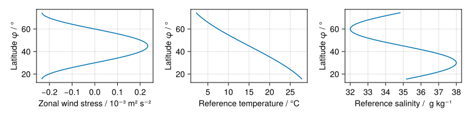
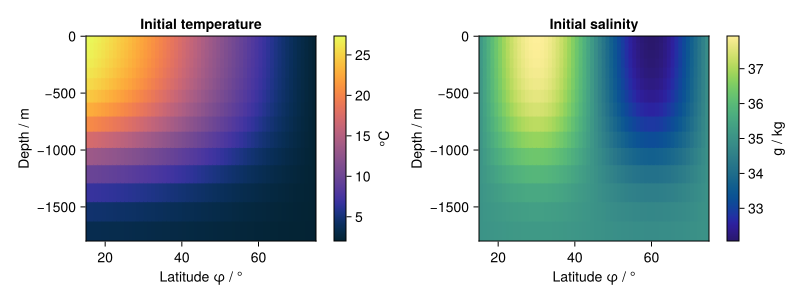

Wind and buoyancy forced double gyre
Model details
The model is an adaptation of the baroclinic gyre example from the MITgcm documentation. It simulates a wind and buoyancy forced double-gyre ocean circulation on a spherical shell sector spatial domain, with default domain extents $(0^\circ, 60^\circ) \times (15^\circ, 75^\circ) \times (-1800\textsf{m}, 0\textsf{m})$ (longitude × latitude × depth dimensions).
By default a non-linear TEOS-10 polynomial equation of state is used to compute buoyancy from salinity and temperature fields. No slip / no-flux boundary conditions are applied to the velocity fields on all walls, and a boundary condition corresponding to a damping zonal drag on the bottom surface. The zonal velocity component is subject to a latitude dependent wind stress roughly reflecting average zonal wind patterns at the surface. The temperature and salinity fields have no-flux boundary conditions applied on all walls and the bottom surface, and relaxation boundary conditions on the top surface which restore the surface fields towards a latitude dependent reference temperature / salinity with a parameterized relaxation time. The surface wind stress, reference temperature and reference salinity as a function of latitude are shown in the figure below.

The model is initialised from rest (zero velocity). The temperature and salinity fields are initialised to match the reference temperature and salinity at the surface and following smoothly varying thermocline / halocline like profiles with depth, and constant in longitude, as shown in the figure below.

Usage example
The below example illustrates setting up and running a simulation of the model with the default parameter values and configuration modulo changing the model to record only a horizontal (surface) slice and depth slice along longitude axis as outputs, and decreasing the progress message update frequency. The resulting horizontal and depth slices of simulated fields are recorded as an animation using CairoMakie. A coarse default grid size (60 × 60 × 15) and small simulation time (60 days) are set so as to allow a simulation to run in around 5 minutes on a CPU, but if running on a GPU (controlled by architecture keyword argument to SimulationConfiguration) then finer spatial discretizations and longer simulation times can easily be used.
using Oceananigans.Units
using GyreInABox
parameters = DoubleGyreParameters()
configuration = SimulationConfiguration(
output_types=(
x_depth_slice_output(; y_or_latitude=45.),
horizontal_slice_output(; depth=0.)
),
progress_message_interval=400
)
run_simulation(parameters, configuration)
plot_outputs(AnimationPlotOutput(), parameters, configuration)[ Info: Initializing simulation...
┌ Info: Iteration: 0000, time: 0 seconds, Δt: 15 minutes, wall time: 0 seconds
└ max(|u|) = 0.00e+00 m s⁻¹, max(|v|) = 0.00e+00 m s⁻¹, max(|w|) = 0.00e+00 m s⁻¹, max(|S|) = 3.79e+01 10⁻³, max(|T|) = 2.73e+01 °C
[ Info: ... simulation initialization complete (14.377 seconds)
[ Info: Executing initial time step...
[ Info: ... initial time step complete (8.496 seconds).
┌ Info: Iteration: 0400, time: 8.167 days, Δt: 30 minutes, wall time: 38.957 seconds
└ max(|u|) = 1.31e+00 m s⁻¹, max(|v|) = 3.81e+00 m s⁻¹, max(|w|) = 6.58e-03 m s⁻¹, max(|S|) = 3.81e+01 10⁻³, max(|T|) = 2.74e+01 °C
┌ Info: Iteration: 0800, time: 16.500 days, Δt: 30 minutes, wall time: 52.206 seconds
└ max(|u|) = 1.43e+00 m s⁻¹, max(|v|) = 3.37e+00 m s⁻¹, max(|w|) = 7.16e-03 m s⁻¹, max(|S|) = 3.83e+01 10⁻³, max(|T|) = 2.75e+01 °C
┌ Info: Iteration: 1200, time: 24.833 days, Δt: 30 minutes, wall time: 1.092 minutes
└ max(|u|) = 1.44e+00 m s⁻¹, max(|v|) = 3.52e+00 m s⁻¹, max(|w|) = 7.60e-03 m s⁻¹, max(|S|) = 3.86e+01 10⁻³, max(|T|) = 2.82e+01 °C
┌ Info: Iteration: 1600, time: 33.167 days, Δt: 30 minutes, wall time: 1.316 minutes
└ max(|u|) = 1.56e+00 m s⁻¹, max(|v|) = 2.94e+00 m s⁻¹, max(|w|) = 5.27e-03 m s⁻¹, max(|S|) = 3.90e+01 10⁻³, max(|T|) = 3.37e+01 °C
┌ Info: Iteration: 2000, time: 41.500 days, Δt: 30 minutes, wall time: 1.535 minutes
└ max(|u|) = 1.60e+00 m s⁻¹, max(|v|) = 2.61e+00 m s⁻¹, max(|w|) = 7.15e-03 m s⁻¹, max(|S|) = 3.85e+01 10⁻³, max(|T|) = 2.88e+01 °C
┌ Info: Iteration: 2400, time: 49.833 days, Δt: 30 minutes, wall time: 1.755 minutes
└ max(|u|) = 1.72e+00 m s⁻¹, max(|v|) = 3.09e+00 m s⁻¹, max(|w|) = 2.18e-03 m s⁻¹, max(|S|) = 3.83e+01 10⁻³, max(|T|) = 2.77e+01 °C
┌ Info: Iteration: 2800, time: 58.167 days, Δt: 30 minutes, wall time: 1.978 minutes
└ max(|u|) = 1.69e+00 m s⁻¹, max(|v|) = 2.48e+00 m s⁻¹, max(|w|) = 2.80e-03 m s⁻¹, max(|S|) = 3.84e+01 10⁻³, max(|T|) = 2.75e+01 °C
[ Info: Simulation is stopping after running for 2.026 minutes.
[ Info: Simulation time 60 days equals or exceeds stop time 60 days.
[ Info: Recording an animation of spatial_slice_at_y_45.0_of_variables_u_v_w_S_T_at_time_interval_1day to ./gyre_model_spatial_slice_at_y_45.0_of_variables_u_v_w_S_T_at_time_interval_1day.mp4...
Plotting frame 10 of 61
Plotting frame 20 of 61
Plotting frame 30 of 61
Plotting frame 40 of 61
Plotting frame 50 of 61
Plotting frame 60 of 61
[ Info: Recording an animation of spatial_slice_at_z_0.0_of_variables_u_v_w_S_T_at_time_interval_1day to ./gyre_model_spatial_slice_at_z_0.0_of_variables_u_v_w_S_T_at_time_interval_1day.mp4...
Plotting frame 10 of 61
Plotting frame 20 of 61
Plotting frame 30 of 61
Plotting frame 40 of 61
Plotting frame 50 of 61
Plotting frame 60 of 61